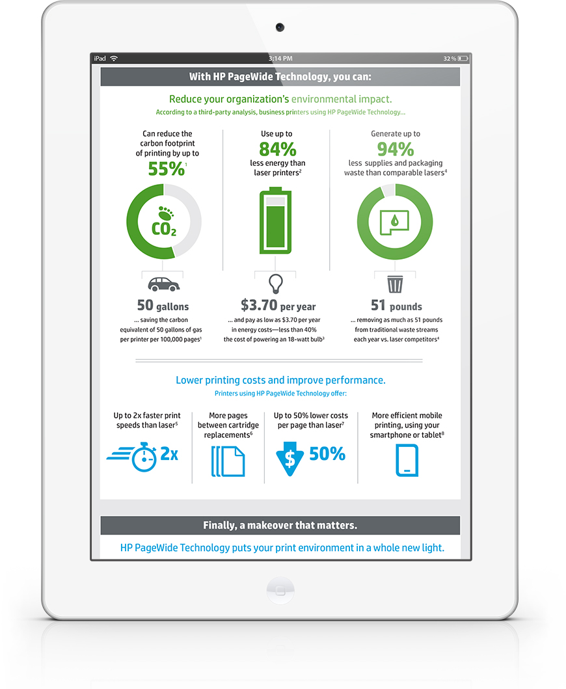

<div class="social-icons">
                                    <span><a class="border-radius" data-rel="tooltip" data-toggle="tooltip" data-trigger="hover" data-placement="bottom" data-title="LinkedIn" href="https://www.linkedin.com/in/ryanbone" target="_blank"><i class="fa fa-linkedin"></i></a></span>
                                    <span><a class="border-radius" data-rel="tooltip" data-toggle="tooltip" data-trigger="hover" data-placement="bottom" data-title="Behance" href="https://www.behance.net/thecreativebone" target="_blank"><i class="fa fa-behance"></i></a></span>
                                    <span><a class="border-radius" data-rel="tooltip" data-toggle="tooltip" data-trigger="hover" data-placement="bottom" data-title="Pinterest" href="https://www.pinterest.com/thecreativebone/" target="_blank"><i class="fa fa-pinterest"></i></a></span>
                                    <span><a class="border-radius" data-rel="tooltip" data-toggle="tooltip" data-trigger="hover" data-placement="bottom" data-title="Tumblr" href="http://blog.thecreativebone.com/" target="_blank"><i class="fa fa-tumblr"></i></a></span>
                                </div><!-- end social icons -->

                        <div class="post-media">
                            <a href="images/hp-4.jpg" data-gal="prettyPhoto"></a>
                        </div>
                        <div class="post-media">
                            <a href="images/hp-2.jpg" data-gal="prettyPhoto"></a>
                        </div>
